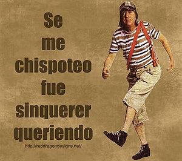

Chavo del ocho
 De: La Frikipedia, la enciclopedia extremadamente seria.
De: La Frikipedia, la enciclopedia extremadamente seria.
De la serie Programas de TV:
Si se van todos, roban la vecindad
En ella salen adultos que se creen "niños" por que fueron niños pobres de vecindad que no se desarrollaron cerebralmente por malnutrición
«Vuelve el perro arrepentido, con su mirada tan tierna, con el hocico partido… con el rabo entre las piernas»
~ El Chavo del Ocho recitando un poema de amor
«Que dice Quico, que le dijo Doña Florinda, que me dijo a mi, que te dijera a ti, que le dijeras a tu papa que no le devuelve nada»
~ El Chavo del Ocho distraido recordando lo rico que fue tirarse a la Chilindrina la noche anterior
«Pipipipipipí»
~ El Chavo del Ocho cuando se le acabó la droga
«Eso Eso Eso Eso Eso!»
~ El Chavo del Ocho cuando a él le dicen que le va a tocar coger con Ninel Conde
«Fue sin querer queriendo»
~ El Chavo del ocho cuando dejó embarazada a Chilindrina
«Se me chispoteo»
~ El Chavo del ocho cuando se echó un pedo en la cara de Don Ramón
«¡Bueno, pero no se enoje!!»
~ El Chavo del ocho cuando le negó sexo a Doña Florinda
«Es que no me tienen paciencia»
~ El Chavo del ocho respondiéndole a Don Ramón tras decir "¿¿Por qué te pega uno, eh??"
«¡Ahora sí te descalabro los cachetes!»
~ El Chavo del Ocho cuando Quico se tiró a Patty
«Todo yo! Todo yo!»
~ El Chavo del Ocho cuando le echan la culpa
«¡Zas! ¡Zas!, que llegaba y que...»
~ El Chavo del Ocho cuando está alegre por cualquier pelotudez que lo va a beneficiar.
El Chavo del 8 es un sídrome de Peter Pan, se llama el chavo del ocho no por que viva en el apartamento ocho (vive en un barril) si no por que ocho veces fue golpeado por King con increíbles patadas voladoras, de las que ha sido resucitado, aunque le ha dejado lesiones cerebrales que le dejaron retardado.
Historia del Chavo
El chavo es hijo de una unión entre Hitler y el hijo bastardo del El niñato del metro de Valencia (que se podía reproducir por mitosis), cuando el niñato se enteró de que su hijo bastardo era homosexual y había tenido un hijo, decidió eliminarlo a el y su novio de la faz de la tierra, por eso el chavo no tiene papás y al mismo tiempo gracias a Diox acabo la segunda guerra mundial , (ya que consideraba que estaban muriendo muchas personas que debían morir por sus puños y no por otras personas...), Diox botó al chavo a una pocilga y lo condeno a vivir en un barril, amenazándolo de que si llegaba a vivir en un lugar decente , conocería su furia, pero el chavo que era muy imbécil , desobedeció la santa orden de Diox ocho veces, y conoció a Cyberjesús que estaba mu cabreado, desde ese entonces sufre de una amnesia y retardo mental que lo hacen pensar que tiene ocho años pero allí no acabo su tortura , pues en esa pocilga o "vecindad" vivían las escorias que Diox había expulsado de su paraíso. Actualmente se encuentra en el infierno dedicándose a seguir cabreando a Ron Damón con cualquier pelotudez, además de aliarse con El Duce y Kenny McCormick para darle un Golpe de Estado a El tipo cuernudo que te jalará las patas si te portas mal.
Protagonistas
De la serie grandes personajes:
Así es como se ve un niño de 41 años o más con retraso.
| Nacimiento
|
Hace como 65 años, nacio siendo niño y hasta la fecha lo sigue siendo.
|
| Muerte
|
Es inmortal
|
| Ocupación
|
Ser un niño especial
|
| Nacionalidad
|
Vencindediano (mexicano)
|
| Malo o bueno
|
Inmoral (¿QUÉE?)
|
| Atentados contra la humanidad
|
Golpear al señor Barriga nada más llegar
|
| Religión
|
Vecindadismo
|
| Notas
|
Eso, eso, eso
|
- Chavo del 8: Niño con retardo mental amnésico que ocho veces se atrevió a desobedecer a Diox, vive para contarlo pero desearía haber muerto.
- Don Ramón: Violador de niños, que una vez cometió herejía teniendo una relación con Helena de Troya, además estaba casado con juana de arco. Diox al ver que como abusaron de su hija decidió castigar a Don Ramón matando a Juana de Arco (quemada), y enviándolo al infierno (vecindad), con su hija ninfómana apodada la chilindrina, que fue un derivado de su otro apodo "la chicholina".
- La Chilindrina: Ninfómana, actriz porno de buen cuerpo apodada también "la chicholina".
- Quico: Niño con hidrocefalia, que sufre su castigo por atreverse a declararse todopoderoso, recibio una ostia en la cara por parte de Cyberjesús que le inflo los cachetes a tamaños inimaginables.
- Doña Florinda: Fue una espía de la U.R.S.S., llevaba en sus rulos cámaras y grabadoras, creyó que iba a poder engañar a Diox, pero no sabia que era imposible, después la re contrato la P.G.R. (Procuraduria General de la República) Para investigar a un posible nazi que se encontraba en una vecindad del DF. Mundialmente reconocida por sus increíbles cachetadas nucleares (se dice que fue una de estas la que causó el incidente de Hiroshima y no una bomba atomica).
Maistro LonganizaProfesor Jirafales: Creación de Hitler, se suponía iba a ser el humano perfecto, pero como ya existía Bruce Lee entonces tuvo que desechar el proyecto (o mas se desecho con la muerte de Hitler).- Bruja del 71: Ahora que recuerdo nadie recuerda su verdadero nombre (Mentira, se llama Cleotilde). Era una de las mujeres mas hermosas del mundo hasta que fue castigada por Diox ya que le parecía muy hermosa para ser verdad, desde ese día la convirtió en bruja para poder volver a su estado anterior.
- Señor Barriga: Fue castigado por Ñoño
- Ñoño:
Escuíncle cúlogordo hijo del Señor Barriga. Cree ser superior al resto de la vecindad por su complejo físico económico robusto y gran desdichéz a compartir lo que le pertenece, lo cual le pone de imagen como el típico estereotipo de persona glotona y aprovechada. Eso si, le da el bocho, pero medio mundo se ríe y burla de su gordura, ya sea intencional o indirectamente.
- Jaimíto el Cartero: Hombre de la tercera edad cuyas alucinaciones acerca de su pueblo natal derivan a que se ha encontrado algo muy interesante en uno de los paquetes que debía entregar. Se conoce por experiencia que sufre de orgasmos múltiples al evitar la fatiga.
- Godínez: Es un niño de más o menos la edad del Chavo.pendejo y ligeramente retraído mental.Es incapacitado para trabajar y es familiar del Chavo -A poco no sabías de dónde le venía lo pendejo-
La serie
La 2 de TVE, antes de emitir la serie, comprobó que su contenido era tan inmensamente hostil que a los ojos de los humanos (salvo a los de Marujita Díaz o la Duquesa de Alba) parecería una simple serie humorística. En realidad su temática es tan tan enrevesada, troncada e infinita que ni los mejores programas sudamericanos se pueden comparar con los inmensos mofletes de Kiko. Además de ser imposible de prever las acciones, cada capítulo más insólitas, de sus protagonistas.
Innovaron en la fotografía digital, en nuevos ángulos de las cámaras y crearon un efecto (que aún no se ha descubierto en nuestros tiempos) que hace que creas que es una serie de escasos (por no decir -3) recursos.
Como conclusión, no sabemos cuál es realmente la temática de esta ingeniosa serie. Ni los mejores científicos del país y del extranjero han dado con la clave. Ni siquiera Google encuentra respuestas a la pregunta. (Si alguien osa pensar que sabe la respuesta, una botella de Fanta se convertiría en una bomba y le estallaria en los cojones). Al final de la serie, el Chavo del Ocho es encontrado por Mace Windu, antiguo caballero Jedi derrotado por el Papa Benedicto XVI. Siguiendo su ejemplo, se va a jugar a Pokémon, unos animales pokemonizados por kryptonita. Poca gente conoce su paradero en estos momentos.
Insólito
- ¿Cómo puede vivir un niño de 4 años en un barril durante 4 años?
- La serie, ¿tiene final?
- Si la tiene:https://www.youtube.com/watch?v=IGwWx8rsEG4
- EL Chavo no tenía dificultades para comprar alcohol porque siempre ha aparentado más de los años que tiene... El único problema era que no tenia pesos.
- El chavo siempre saluda al señor barriga con un golpe...
- ...Y se despide de la misma forma...
- ...Porque en realidad es un extraterrestre y esa es su forma de saludar. Pero no se lo puede decir porque lo acusan de inmigrante ilegal.
- Cuando el Chavo hace la declaración de la Renta, ¿cuanto le piden por 0.5 m de diámetro de barril?
- Cuando el Chavo esta triste, no duerme en su barril porque lo inunda.
- Los mofletes de Quico son de verdad.
- El Chavo no es Chespirito, es Galindo, lo que pasa es que en Latinoamérica les gustó mas lo otro.
- Quico es la única persona en el mundo que se cree que cuando el chavo dice "no estoy", no está.
- Quico con un billete de 500 pesos compra una limonada.
- EL Chavo en un capítulo se compro-vendio 1 kg de churritos a sí mismo.
- Hay una pagina donde sale Doña Florinda sin rulos.
- Se encuentran resultados en el Google si buscas "la chilindrina guapa".
- Por que chingados cada que a uno se le ocurre salir de la vecindad todos se salen
- A Doña Florinda se le hace agua la canoa con el Profesor Jirafales.
- El Chavo le ponía duro a la Chilindrina.
- La Chilindrina le ponía duro al Chavo.
- Don Ramón tiene un puticlub, y ahí prostituye a la Chilindrina.
- Quico, El Chavo y Chilindrina son los auténticos dueños de la canción Chop Suey.
Frases
 Una de sus frases más recurrentes...En esta ocasión fue cuando le dio un señor balonazo a
Don Ramón en el careto
Con el objetivo de hipnotizar a todos los niños mexicanos del momento, se inventaron una serie de frases que repetían en cada capítulo acompañado de una serie de gestos que los niñ@s, embobados, imitaban en los recreos y en las tardes que jugaban en el parque.
Algunas muy destacadas son:
- Eso, eso, eso, eso, eso... (con un gesto como cuando vas a un restaurante chino a pedir palillos).
- Fue sin querer queriendo (ésta aun se utiliza).
- Bueno, bueno, pero no se me enoje (ésta más todavia que la anterior)
- .... al profesor longaniza (el chavo revelando el verdadero nombre del profesor jirafales)
- ¡TA, TA, TA, TA... TA! (el profesor
longaniza jirafales cuando se enoja)
- Se me chispoteo (a todos tambien se les ha chispoteado alguna vez)
- Se me chispoteo (el profesor jirafales respondiendo al anterior comentario)
- ¡¡Sale y vale!! (Significa OK)
- ¿Que pasó, que pasó, vamos ahi? (Cuando alguien se pasa de confianzudo)
- ¡¡Chusma, chusma, pfff!! (Para alejar con un empujoncito a un imbécil que te cae mal, aunque tu también quedas como un idiota)
- Lo que tienes de bruto... ¡Lo tienes de bruto! (¿Preguntas?)
- Aaa, bueno, así pos sí. (Cuando se aclara un malentendido)
- Cállate, cállate, cállate que me desespeeer (sin aire) aas.
- Es que no me tienen paciencia (esta se hizo tan famosa que pudo dominar el mundo durante 5 segundos seguidos)
- Pipipipipipí (el Chavo cuando llora)
- Miralo eh, miralo eh (ñoño despues de que le demuestran lo gordo que es)
- no eres mas menso por que no eres mas grande (alguien despues de ver al lo inteligente que es el chavo)
- yo no me estaba drogando (el chavo con un monton de cocaina)
- ... y la próxima vez vaya usted a (Hacerle cualquier cosa) a su abuela!! (Doña Florinda despues de darle una bofetada a Don Ramón )
- Don Ramón, ¿a su abuelita le gusta (Hacer cualquier cosa) (el chavo intentando que dDon ramon le de su dosis diaria de coscorrones)
- ¡Ahora sí te descalabro los cachetes! (Usada por el Chavo con Quico, sigue siendo una de las amenazas más inquietantes a la par que crípticas concebidas por la mente humana).
Enlaces externos
 Mēxihco Mēxihco
|
Estados Libres y Soberanos Pero Igual Subordinados
Ciudades, Localidades y Ejidos
El Mundo del Espectáculo, la Farándula, Luminarias y otras Vergüenzas
Tribus Urbanas Nacionales
Historia y su Rara Cultura
|
Autor(es):
- Krusher
- Nexo
- Fordus
- Marquise
- Rafa
- Pexy
- Apocalypsus
- Locutor
- Frikiman
- Aque
Frikipedia 2005-2016, Licencia
GFDL 1.2 - Extraído por FrikiLeaks